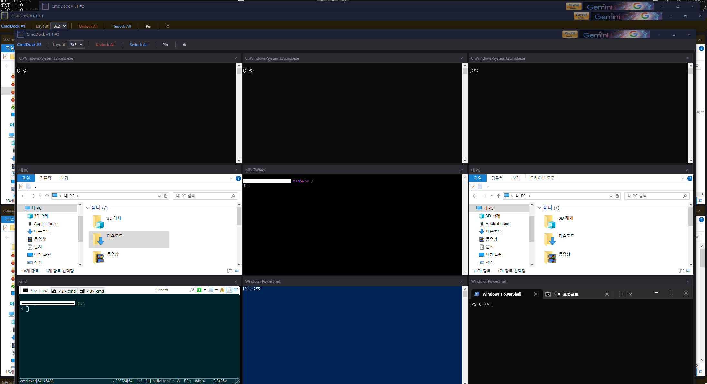
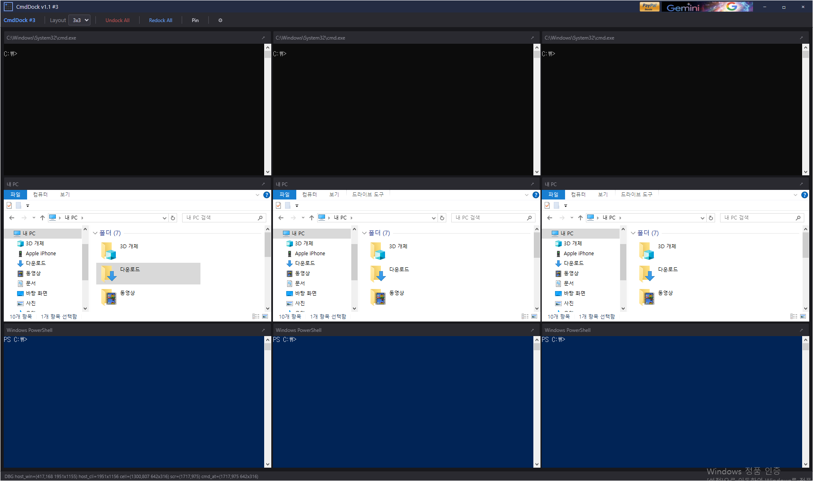

CmdDock — A lightweight Windows utility that docks CMD, PowerShell, Windows Terminal, and Explorer windows into a single resizable grid host.
Stop juggling scattered console windows across your desktop.
Lay out a row × column grid, drop any console or Explorer window into a cell, and manage them all from one window.
Download NowArrange any number of rows and columns, drag windows over the host, and drop them into cells. Resize live by dragging row/column borders.
Dock CMD, PowerShell, Windows Terminal, ConEmu, Git Bash, File Explorer, and any custom .exe / .bat / .lnk.
Run up to 16 independent instances side by side. Each instance saves its grid layout, cell ratios, dock state, and theme to its own session file — Redock All re-binds matching live windows on restart.
Launch Explorer directly into a cell at a saved path. /separate launch keeps shell extension overlays (like TortoiseGit) loading cleanly per process.
Editable cell labels, per-cell custom exe registration, and right-click menu to Launch / Undock / Redock / Reset any cell instantly.
Self-drawn dark titlebar and toolbar with no system frame. Tune titlebar, toolbar, and cell colors — persisted with the session.

Grid host with docked CMD, PowerShell, Terminal, and Explorer windows

Resizable rows and columns — drag borders to relayout live
CmdDock is free and open source. Fully portable — no installer required.
CmdDock is free and open-source software released under the MIT License.
Use it freely for personal, educational, or commercial purposes.